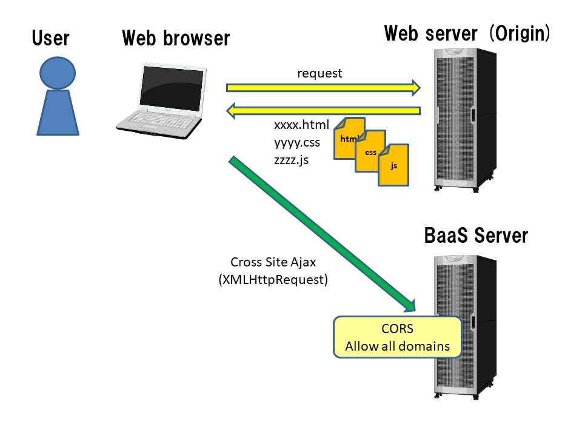

2.7. Cross Origin Resource Sharing (CORS)¶
BaaS サーバは CORS (Cross Origin Resource Sharing) に対応しています。
CORS とは Web ブラウザがオリジン(HTMLファイルをダウンロードしたサーバ) 以外のサーバに対し、クロスサイト Ajax 通信(XMLHttpRequest)を許可するためのものです。 CORS は JavaScript SDK を利用する場合にのみ影響があります。
CORS 対応ブラウザからは、クロスサイトで Ajax 通信が可能です。 つまり、HTML・JavaScriptファイルを配置するサーバが BaaS サーバと異なる サーバであっても、BaaS API を呼び出すことが可能です。
{kind=link}
CORS には、Internet Explorer 10 以上、Firefox、Chrome(Android含む)、Safari(iOS Safari含む)、Android Browser などが 対応しています。Internet Explorer 9 以下は対応していませんので、注意してください。
CORS の詳細については HTTP access control (CORS) | MDN などを参照してください。
BaaS サーバは以下のように動作します。
- デフォルトでは任意のドメインからのクロスドメインアクセスを許可します。具体的には Access-Control-Allow-Origin を '*' で応答します。
- クレデンシャルの送信はデフォルトでは禁止となります。許可した場合は、Access-Control-Allow-Credentials ヘッダを送信します。
- プリフライトリクエスト(OPTIONS)に対して以下のように応答します。
- Access-Control-Allow-Methods は GET, POST, PUT, PATCH, DELETE, OPTIONS を応答します。
- Access-Control-Allow-Headers は、デフォルトで Origin, Content-Type, Accept, X-Requested-With, X-Application-Id, X-Application-Key, X-Session-Token, X-ACL を応答します。 この他、OPTIONS リクエストで送信したヘッダも応答します。
- Access-Control-Max-Age は 7日間です。
CORS有効/無効設定、許可ドメイン、Access-Control-Allow-Credentials 許可の各設定値は、デベロッパコンソールの テナント設定 より変更可能です。
注意
許可ドメインをデフォルトの '*' のままにするとセキュリティリスクが高くなります。 利用するサイトに合わせ、個別に設定することを推奨します。